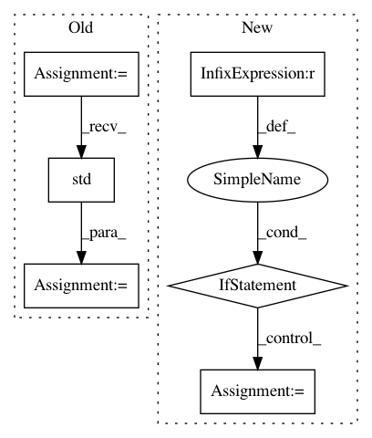

a1d1c2ce8d20099a51a3a55d0fcb18659a3e34c9,QUANTAXIS/QAARP/QARisk.py,QA_Risk,calc_sortino,#QA_Risk#Any#Any#Any#,597
Before Change
daily_returns = self.assets.pct_change()
// Select the negative returns only
negative_returns = daily_returns.loc[daily_returns < target_return]
// Calculate expected return and std dev of downside returns
expected_return = daily_returns.mean()
down_stdev = negative_returns.std()
// Calculate the sortino ratio
sortino_ratio = (expected_return - rfr)/down_stdev
// 这里不知道计算年化率如何
After Change
在网上找到代码，感觉计算的结果不太对，数值偏小 -阿财 2020/03/28
// 会出现0
if volatility_year == 0:
return 0
// Define risk free rate and target return of 0
target = 0
// Calcualte the daily returns from price data
df = pd.DataFrame(columns=["Returns","downside_returns"],
index=self.assets.index)
df["Returns"] = (self.assets.values / self.assets.shift(1).values) - 1
df["downside_returns"] = 0
// Select the negative returns only
df.loc[df["Returns"] < target, "downside_returns"] = df["Returns"] ** 2
In pattern: SUPERPATTERN
Frequency: 3
Non-data size: 6
Instances
Project Name: QUANTAXIS/QUANTAXIS
Commit Name: a1d1c2ce8d20099a51a3a55d0fcb18659a3e34c9
Time: 2020-05-06
Author: 11652964@qq.com
File Name: QUANTAXIS/QAARP/QARisk.py
Class Name: QA_Risk
Method Name: calc_sortino
Project Name: pymc-devs/pymc3
Commit Name: 21c16153ecd473a027df2af1e9a4fd3c71810e1a
Time: 2017-04-14
Author: maxim.v.kochurov@gmail.com
File Name: pymc3/variational/callbacks.py
Class Name: CheckLossConvergence
Method Name: __call__
Project Name: pymc-devs/pymc3
Commit Name: d493caa1278c158b78aa02c8f23d4f56c311f975
Time: 2017-04-14
Author: maxim.v.kochurov@gmail.com
File Name: pymc3/variational/callbacks.py
Class Name: CheckLossConvergence1
Method Name: __call__